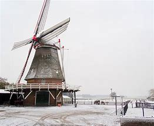
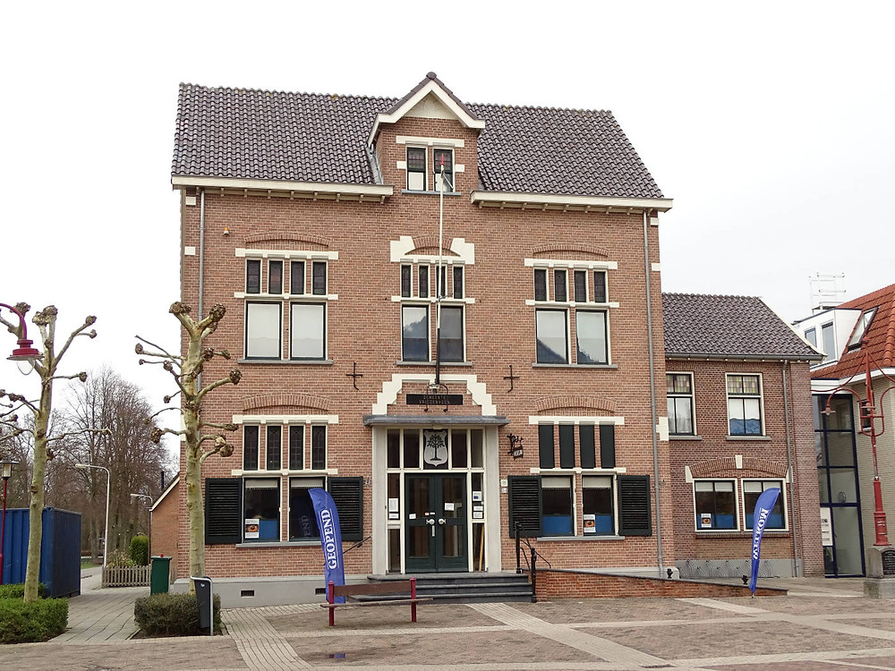

Historisch monument, gebouwd in 1862 
Aan de Hammerweg in Vriezenveen staat de Leemansmolen. Kom binnen in de molen en beklim de trap naar de 3 meter hoge stelling.
Bewonder het fraaie uitzicht en verwonder je over de enorme wieken, het kruirad en de staart van de molen. Je hoort en ruikt de molen!
De draaiende wieken suizen in de wind. Als er gemalen wordt, hoor je het 'zingen' van de langs elkaar wrijvende molenstenen.
Je ruikt het vers gemalen gerstemeel.

De Vereniging Oud Vriezenveen is op 29 augustus 1949 in de raadzaal van het gemeentehuis te Vriezenveen opgericht.
Het werkgebied van de vereniging strekt zich uit over de zeven dorpskernen Aadorp, Bruinehaar, De Pollen, Vriezenveen,
Weitemanslanden, Westerhaar-Vriezenveensewijk en de Westerhoeven.
Het doel van de vereniging is de behartiging der oudheid- en geschiedkundige belangen in de gemeente Vriezenveen,
het bevorderen van de daarmee gepaarde wetenschap, de instandhouding, bewaring, waar wenselijk herstel, van de
betrekkelijke monumenten en het aankweken van de belangstelling daarvoor.